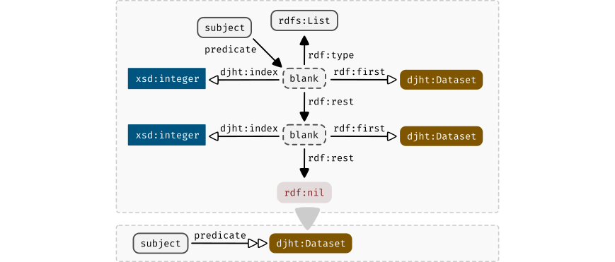
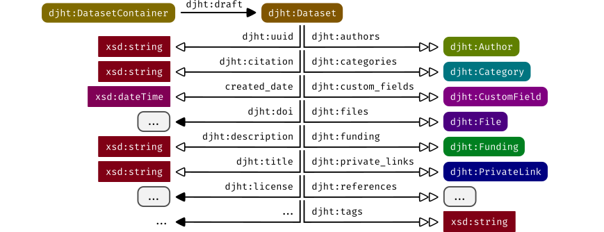
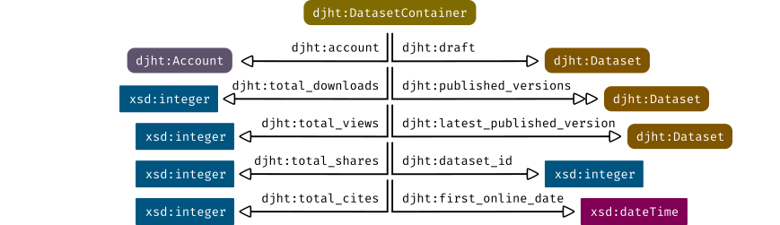
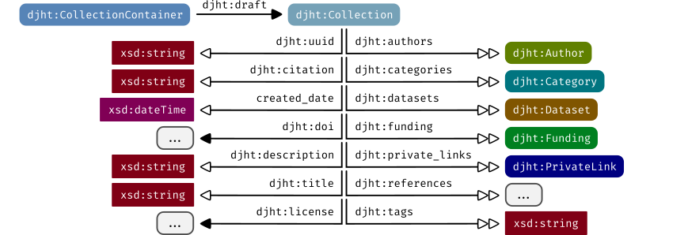
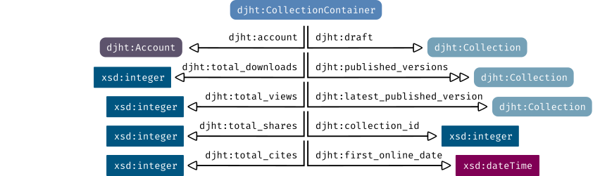
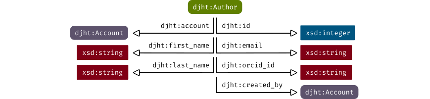
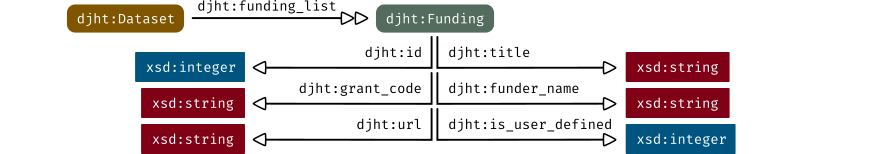
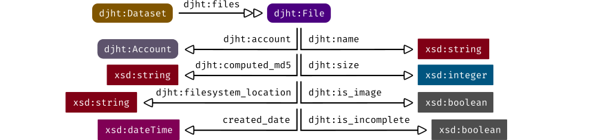
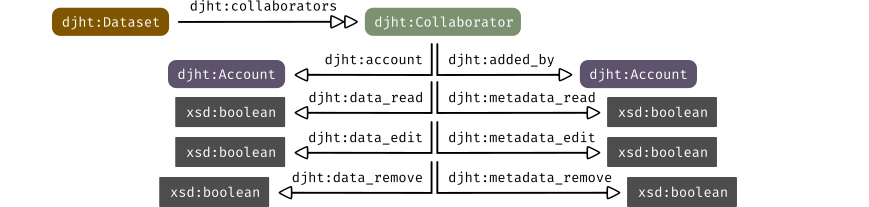

Knowledge graph
djehuty processes its information using the Resource Description Framework.
This chapter describes the parts that make up the data model of djehuty.
This chapter dives into the structure of the data model, but does not describe
every property. When running an instance of djehuty, the "Exploratory"
available in the "Admin panel" can be used to explore every property.
Use of vocabularies
Throughout this chapter, abbreviated references to ontologies are used. The table below lists these abbreviations.
| Abbreviation | Ontology URI |
|---|---|
djht |
Internal and unpublished ontology. |
rdf |
http://www.w3.org/1999/02/22-rdf-syntax-ns# |
rdfs |
http://www.w3.org/2000/01/rdf-schema# |
xsd |
http://www.w3.org/2001/XMLSchema# |
Notational shortcuts
In addition to abbreviating ontologies with their prefix we use another
notational shortcut. To effectively communicate the structure of the RDF graph
used by djehuty we introduce a couple of shorthand notations.
Notation for typed triples
When the object in a triple is typed, we introduce the shorthand to only
show the type, rather than the actual value of the object. The figures below
display this for URIs and for literals respectively.
Figure: Shorthand notation for triples with an rdf:type, which features a hollow predicate arrow and a colored type specifier with rounded corners.
Literals are depicted by rectangles (with sharp edges) in contrast to URIs which are depicted as rectangles with rounded edges.
Figure: Shorthand notation for triples with a literal, which features a hollow predicate arrow and a colored rectangular type specifier.
When the subject of a triple is the shorthand type, assume the subject is not the type itself but the subject which has that type.
Notation for rdf:List
To preserve the order in which lists were formed, the data model makes use of
rdf:List with numeric indexes. This pattern will be abbreviated in the
remainder of the figures as displayed below.

Figure: Shorthand notation for rdf:List with numeric indexes, which features a hollow double-arrow. Lists have arbitrary lengths, and the numeric indexes use 1-based indexing.
The hollow double-arrow depicts the use of an rdf:List with numeric indexes.
Datasets
Datasets play a central role in the repository system because every other type
links in one way or another to it. The user submits files along with data about
those bytes as a single record which we call a djht:Dataset. The figure below
shows how the remainder of types in this chapter relate to a djht:Dataset.

Figure: The RDF pattern for a djht:Dataset. For a full overview of djht:Dataset properties, use the exploratory from the administration panel.
Datasets are versioned records. The data and metadata between versions can
differ, except all versions of a dataset share an identifier. We use
djht:DatasetContainer to describe the version-unspecific properties of a set
of versioned datasets.

Figure: The RDF pattern for a djht:DatasetContainer. All versions of a dataset share a djht:dataset_id and a UUID in the container URI.
The data model follows a natural expression of published versions as a linked list. The figure above further reveals that the view, download, share and citation counts are stored in a version-unspecific way.
Collections
Collections provide a way to group djht:Dataset objects.

Figure: The RDF pattern for a djht:Collection. For a full overview of djht:Collection properties, use the exploratory from the administration panel.
Collections are (just like Datasets) versioned records. The metadata between
versions can differ, except all versions of a collection share an identifier.
We use djht:CollectionContainer to describe the version-unspecific properties
of a set of versioned collections.

Figure: The RDF pattern for a djht:CollectionContainer. All versions of a collection share a djht:collection_id and a UUID in the container URI.
The data model follows a natural expression of published versions as a linked list. The figure above further reveals that the view, download, share and citation counts are stored in a version-unspecific way.
Authors
djehuty keeps records of authors including their full name, ORCID, and e-mail
address. Furthermore, each djht:Account has a linked djht:Author record.

Figure: The RDF pattern for a djht:Author.
Accounts
djehuty uses an external identity provider, but stores an e-mail address,
full name, and preferences for categories.
Figure: The RDF pattern for a djht:Account.
Funding
When the djht:Dataset originated out of a funded project, the funders can be
listed using djht:Funding. The figure below displays the details for this
structure.

Figure: The RDF pattern for a djht:Funding.
Categories
Categories in djehuty are a controlled vocabulary based on the
Australian and New Zealand Standard Research Classification (ANZSRC).
The hierarchical structure is captured by using id and parent_id properties.
Figure: The RDF pattern for a djht:Category.
Institutions/groups
A djht:Account has an affiliation with an institute or research group. The
djht:InstitutionGroup is stored per djht:Dataset and djht:Collection. The
groups can be structured hierarchically by using the id and parent_id
properties.
Figure: The RDF pattern for a djht:InstitutionGroup.
Files
A djht:Dataset keeps a list of djht:File records. The file metadata is
stored in the knowledge graph while the file contents are stored on a
filesystem. The location of the file data is tracked via the
djht:filesystem_location property.

Figure: The RDF pattern for a djht:File.
Private links
Before a djht:Dataset or a djht:Collection is made publicly available, it
can be shared using a private link. The figure below displays how private links
are stored for a djht:Dataset, and it works the same for a
djht:Collection.
Figure: The RDF pattern for a djht:PrivateLink.
Collaborators
To enable multiple accounts collaborating on a dataset before it's published,
each djht:Dataset can have a list of djht:Collaborator objects. A
djht:Collaborator can be given read, edit, and/or remove rights independently
for both metadata (the form fields) and data (the files).

Figure: The RDF pattern for a djht:Collaborator.